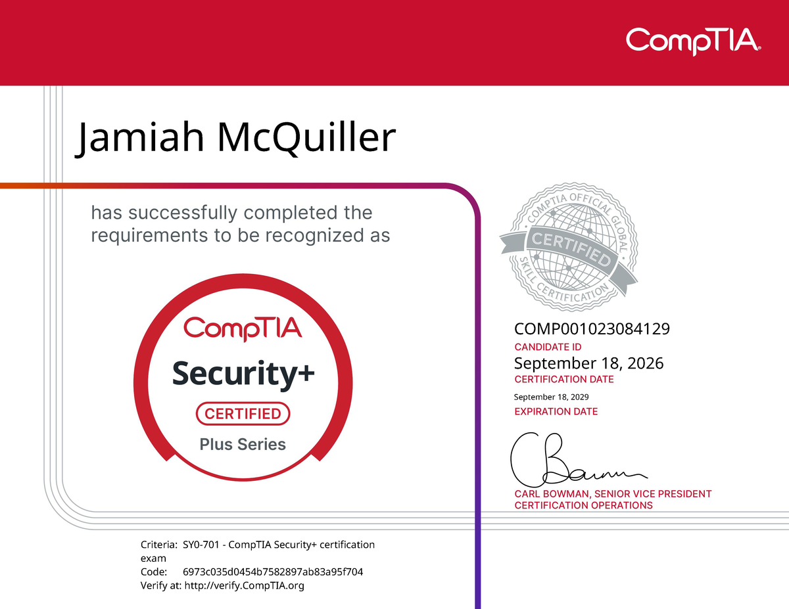

Bachelor of Science in Cybersecurity
University of Michigan–Flint
Minor in Computer Science
Cybersecurity & Vulnerability Management
My professional experience has allowed me to work across several areas of information technology, including enterprise endpoint management, identity and access management, technical support, cloud technologies, and security operations.
In my current role as an IT End User Computing Technician with Genesee County, I contribute to vulnerability remediation, patch management, security documentation, risk assessment activities, and security control validation. I also work with security exception reviews and support compliance and audit-readiness efforts. These responsibilities have strengthened my ability to evaluate technical issues, document security considerations, coordinate remediation activities, and develop processes that support consistent security practices.
Previously, I worked in IT at Nexteer Automotive, where I gained experience with identity and access management, enterprise endpoint deployment, incident triage, ServiceNow, and Microsoft 365 technologies. My experience in customer-facing technical support further developed my troubleshooting skills and ability to resolve hardware, software, and connectivity issues.
I also participated in the Google Cloud Career Jumpstart Program, where I gained hands-on exposure to cloud resources, access controls, cloud application deployment, and infrastructure security concepts.
University of Michigan–Flint
Minor in Computer Science

Professional certification demonstrating foundational cybersecurity knowledge and skills.
Vulnerability assessment, CVE analysis, remediation, patch management, risk prioritization, and remediation validation.
Endpoint security, EDR, security control validation, incident triage, email security, and phishing analysis.
Security risk assessments, USB exception reviews, SOP development, policy and standards development, security controls, and audit readiness.
ManageEngine Endpoint Central, Cymulate, Barracuda Email Security, CrowdStrike Falcon, Okta, Zscaler, Wireshark, and pfSense.
Google Cloud Platform, PowerShell, Python, Microsoft Power Platform, Microsoft 365, and infrastructure automation.
Identity and access management, endpoint deployment, device configuration, technical troubleshooting, Microsoft 365 support, and ServiceNow ITSM.
Experience assessing software vulnerabilities, analyzing CVEs, prioritizing remediation, coordinating patch deployments, and validating remediation across managed endpoints.
Prepare risk assessment documentation and review security exception requests by evaluating business needs, data sensitivity, data flows, access, and proposed safeguards.
Develop and update standard operating procedures, security policies, and standards to support consistent security practices and repeatable operational processes.
Support audit readiness through security control validation, remediation tracking, technical documentation, and compliance activities related to security requirements.